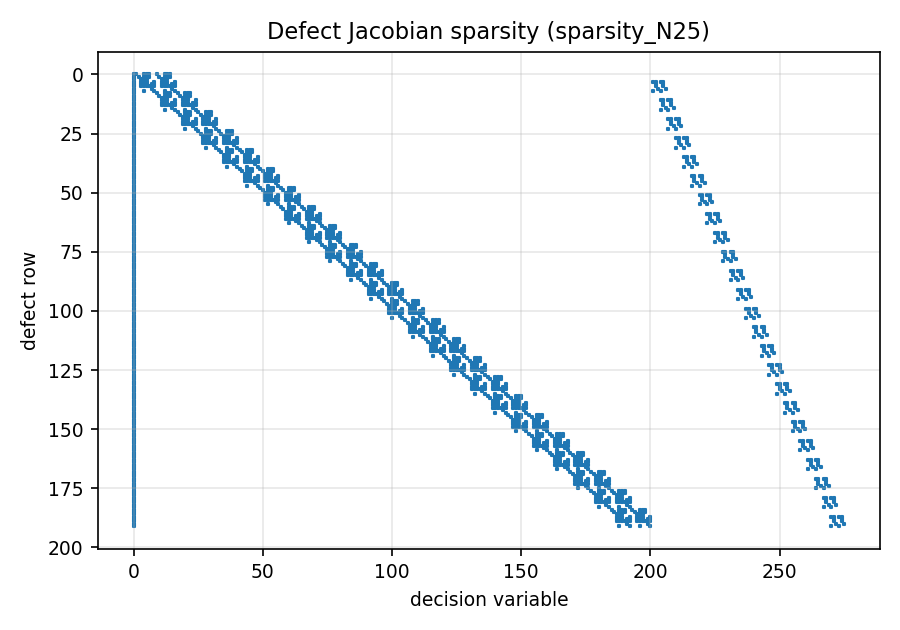

Architecture
Modules and dependencies
Each module has one header in code/include/ofc/ and one source in code/src/. Dependencies only point downwards:
flowchart TD
APP[app: use_cases, io] --> SCN[scenarios: guidance, autopilot]
APP --> PLN[planning: Dubins, Hybrid A*]
SCN --> PLN
PLN --> ENV[model: environment]
FORM --> ENV
APP --> FORM[formulation: transcription]
SCN --> NUM
FORM --> NUM[numerics: numerics, trim]
FORM --> MOD
SCN --> MOD
NUM --> MOD[model: point_mass, rigid_body, performance]
MOD --> AC[model: aircraft]
AC --> ATM[model: atmosphere]
AC --> T[types]| Header | Responsibility |
|---|---|
types.hpp |
Vec, Vec3, Mat3, cross product, rotations, unit conversion |
atmosphere.hpp |
ISA troposphere: T, p, ρ, σ and dρ/dh (needed by the analytic Jacobian) |
aircraft.hpp |
Grouped design data, JSON loading, validation, derived performance |
performance.hpp |
Power required/available, climb rate, max level speed, ceilings, level turns |
point_mass.hpp |
UF model: rhs, analytic jacobian, load factor, fuel flow |
rigid_body.hpp |
FC model: rotations, air data (α, β, Vₐ), coefficient build-up, rhs |
numerics.hpp |
Finite-difference Jacobian (forward or central), dense solve, Newton, RK4 |
trim.hpp |
UF trim (closed form) and FC trim (Newton on u̇, ẇ, q̇) |
transcription.hpp |
TrapezoidalUF: decision vector, defects, sparse Jacobian, constraints, cost, guesses |
environment.hpp |
No-fly zones (polygon, altitude band, margin, signed distance) and waypoints |
planner.hpp |
Dubins paths (six words), Hybrid A* search, mission legs through waypoints |
scenario.hpp |
Scenarios and missions: guidance (heading step or L1 path following), UF dynamic inversion, FC autopilot |
use_cases.hpp, io.hpp |
Command-line use cases, JSON case files, CSV output |
The compiled library ofc_core holds everything except main.cpp. Both the ofc executable and ofc_tests link against it.
Conventions
- Frames. Positions are NED (z positive down, so altitude h = −z). Body axes are x forward, y right, z down. Euler angles are 3-2-1 (ψ, θ, φ).
- Units. SI throughout the code. Angles are radians internally; in input files they are degrees, and those keys always end in
_deg. - Inequalities.
h(z) ≤ 0means satisfied. Every constraint is normalised by its limit, so the values are comparable across constraints. - Scaling. Defect rows are divided by a reference scale per state (
UfScales): the mission distance for positions, V_cruise for speed, the active limits for angles, and m₀ for mass. This keeps every residual of order one, the same normalisation described in 8. Transcription.
Decision-vector layout (TrapezoidalUF)
index: 0 | 1 ............................ N·NX | N·NX+1 ................ N·(NX+NU)
tf| x_0 (NX) | x_1 | ... | x_{N-1} | u_0 (NU) | ... | u_{N-1}
With NX = 8 and NU = 3 there are 1 + 11N variables and 8(N−1) defects. Defect row block k couples only nodes k and k+1 (plus t_f), so the Jacobian is block-banded. At N = 200 only 0.44 % of the entries are nonzero.

Plugging in an optimiser
TrapezoidalUF is solver-agnostic. An interior-point solver needs exactly what it exposes:
| Solver callback | Function |
|---|---|
| objective f(z) | cost(z) |
| gradient ∇f(z) | costGradient(z) |
| equality constraints | defects(z) and boundaryResiduals(z) |
| inequality constraints | pathConstraints(z) (with upper bound 0) |
| constraint Jacobian | defectJacobian(z) (triplets); the boundary and path rows can start with num::fdJacobian |
| initial point | coldStartGuess, trimmedLineGuess, or a trajectory flown by scenario::fly |
The public edition intentionally stops here (see Scope).